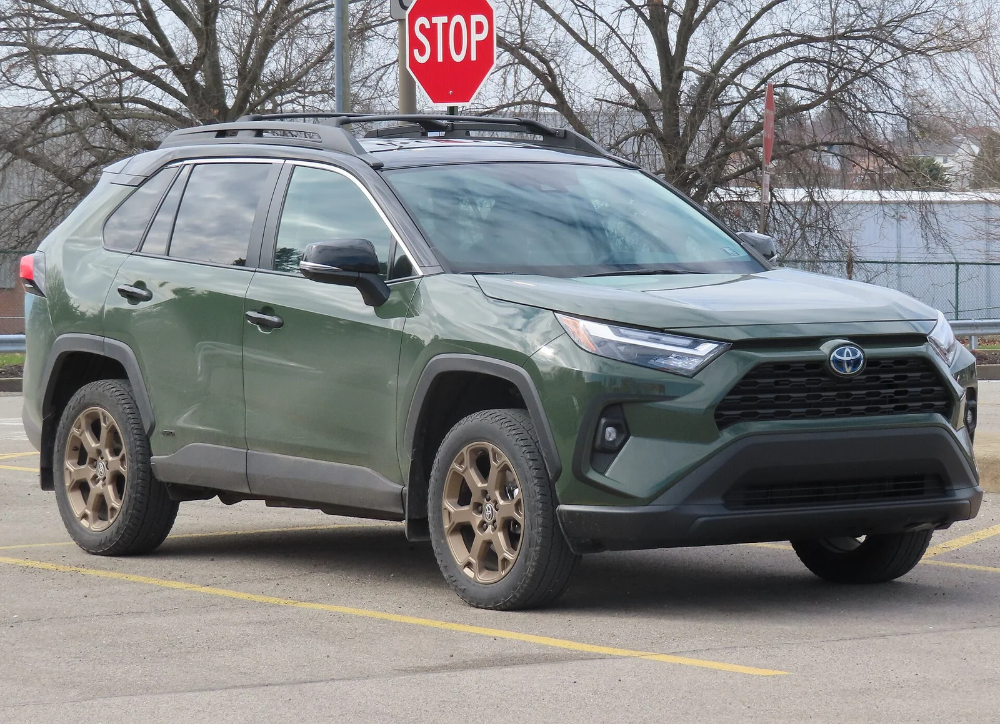
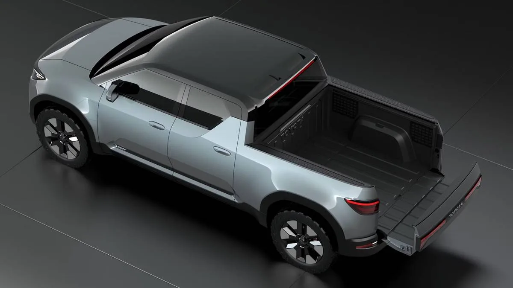

▲ 토요타가 출원한 유니바디 픽업트럭 특허 도면. 크로스오버와 동일한 설계를 픽업 형태로 응용할 수 있다는 내용을 담고 있다
토요타가 크로스오버와 같은 유니바디 플랫폼을 공유하는 소형 픽업트럭 특허를 출원한 사실이 확인됐습니다. 특허 설명에는 "동일한 설계가 크로스오버에도 적용될 수 있다"는 내용이 담겨 있어, 이 픽업이 특정 크로스오버 모델을 기반으로 할 가능성을 시사합니다. 업계에서는 "RAV4 픽업이 나오는 것 아니냐"는 추측이 제기되고 있으며, 이는 사실상 포드 마베릭을 정조준한 경쟁 제품이 될 것으로 보입니다.
1. 유니바디 픽업, 마베릭이 증명한 시장
포드 마베릭은 기존 바디온프레임 방식이 아닌, 크로스오버와 같은 유니바디 구조를 채택해 소형 픽업 시장에서 독보적인 성공을 거뒀습니다. 가격 접근성과 승용차에 가까운 승차감을 무기로, 픽업트럭을 처음 구매하는 소비자층을 대거 흡수한 것입니다. 토요타의 이번 특허 역시 같은 접근법을 취하고 있습니다. 별도의 전용 트럭 플랫폼을 새로 개발하는 대신, 이미 검증된 크로스오버 플랫폼을 픽업 형태로 변형하는 방식으로 개발 비용과 시간을 아끼려는 전략으로 풀이됩니다.

▲ 토요타 RAV4 하이브리드. 업계에서는 이번 특허의 기반이 RAV4 플랫폼일 가능성을 유력하게 보고 있다
2. EPU 콘셉트와의 연결고리
이번 특허와 함께 주목받는 것이 토요타가 과거 공개했던 EPU(Electric Pickup Utility) 콘셉트입니다. 소형 전동화 픽업의 방향성을 제시했던 이 콘셉트카는, 실용적이면서도 콤팩트한 크기의 픽업에 대한 토요타의 관심을 보여준 사례로 평가받았습니다. 이번 유니바디 픽업 특허가 EPU 콘셉트에서 제시된 아이디어의 실제 양산형 연장선일 가능성도 제기됩니다. 다만 특허 자체에는 구체적인 파워트레인이나 크기에 대한 언급은 없는 상태입니다.
| 항목 | 토요타(추정) | 포드 마베릭 |
|---|---|---|
| 플랫폼 | 크로스오버 공유(유니바디) | 유니바디(에스코프 기반) |
| 추정 기반 | RAV4(미확정) | 에스케이프 |
| 연관 콘셉트 | EPU 콘셉트 | - |
| 출시 상태 | 특허 단계 | 판매 중 |

▲ 토요타 EPU(Electric Pickup Utility) 콘셉트. 소형 전동화 픽업에 대한 토요타의 관심을 보여준 과거 콘셉트카로, 이번 특허와의 연관성이 거론된다
3. 왜 RAV4가 유력한 후보로 거론되나
RAV4가 픽업 기반 모델로 유력하게 거론되는 데는 이유가 있습니다. RAV4는 2025년 미국에서만 47만9,288대가 팔리며 픽업트럭을 제외한 전체 차종 중 가장 많이 팔린 모델 자리를 지켰습니다. 혼다 CR-V, 닛산 로그를 제치고 SUV 부문 부동의 1위를 유지하고 있는 셈입니다. 2026년형부터는 6세대 완전변경을 거치며 가솔린 단독 트림을 없애고 하이브리드·플러그인 하이브리드로만 구성된 라인업으로 전환됐습니다. 이 정도 판매 기반과 검증된 플랫폼이라면, 픽업 파생형을 만들었을 때 리스크를 최소화하면서도 볼륨을 확보할 수 있다는 계산이 깔려 있을 것으로 보입니다.
4. "시장 여건이 맞을 때" — 신중한 토요타
토요타 임원진은 소형 픽업 시장 진출과 관련해 "시장 여건이 맞을 때(when the market's right)" 검토하겠다는 신중한 입장을 밝힌 바 있습니다. 이는 확실한 출시 계획이라기보다, 시장 상황을 지켜보며 판단하겠다는 원론적 수준의 발언에 가깝습니다. 포드 마베릭이 독주해온 시장에 진입하려면 상당한 개발 투자와 마케팅이 필요한 만큼, 토요타로서는 신중하게 시점을 저울질하고 있는 것으로 보입니다.

▲ 토요타 RAV4 프라임. 플러그인 하이브리드 파워트레인을 갖춘 이 라인업 역시 픽업 파생형의 잠재적 파워트레인 후보로 거론될 수 있다
5. 정리 — 특허는 확인, 출시는 미지수
이번 특허 확인은 토요타가 소형 유니바디 픽업 시장에 대한 기술적 검토를 진행하고 있다는 사실을 보여줍니다. 그러나 특허 출원과 실제 양산 사이에는 여전히 큰 간극이 있습니다. RAV4 기반 픽업이 실제로 등장할지, 아니면 이 특허가 단순한 기술 방어 차원에 그칠지는 아직 알 수 없습니다. 포드 마베릭이 독점해온 소형 픽업 시장에 토요타라는 강력한 경쟁자가 뛰어들지, 앞으로의 행보를 지켜볼 필요가 있습니다.